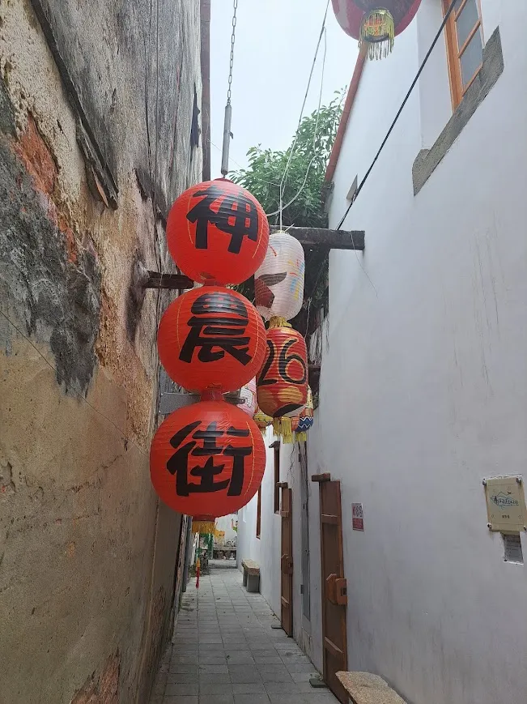
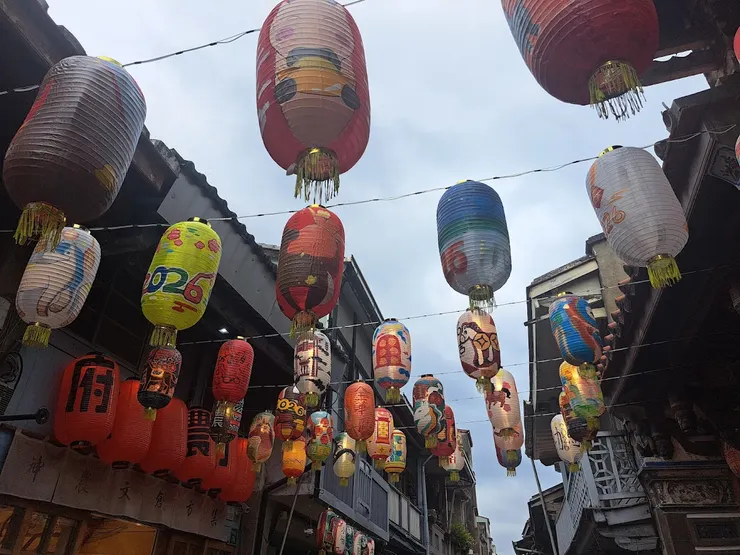
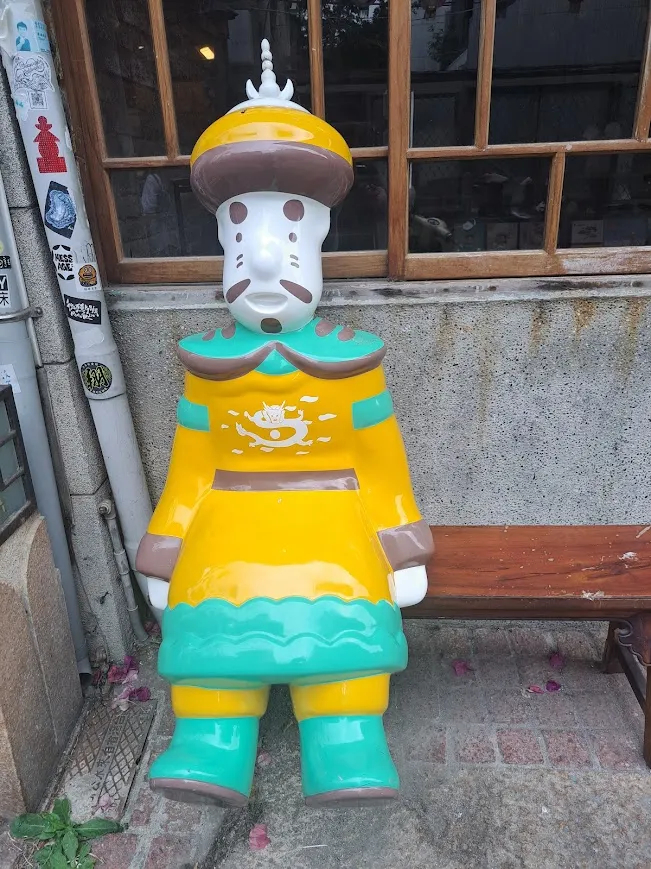
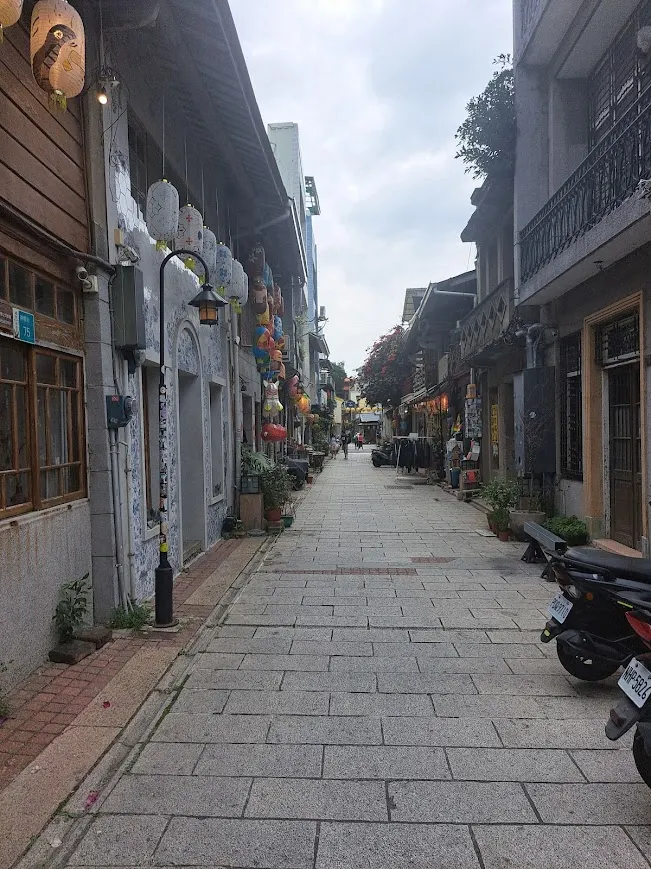
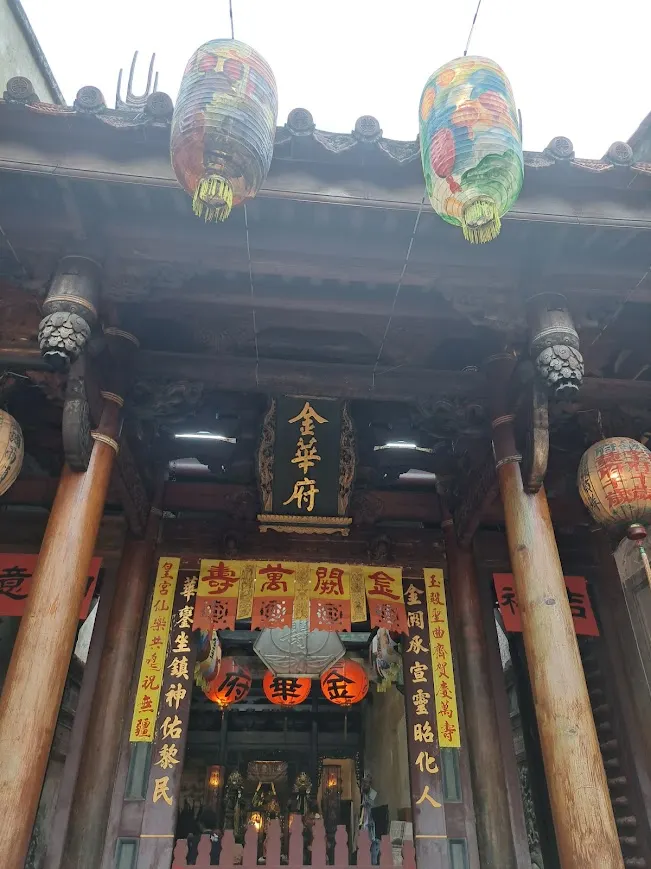
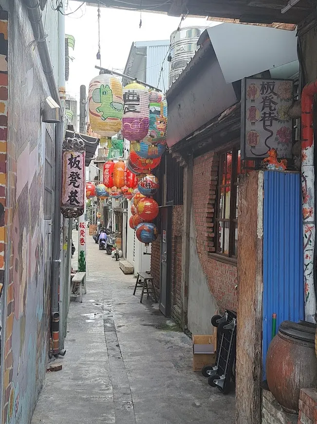

台南｜重返清代街道：神農街的日與夜，一場穿越 300 年的復古燈籠夢


每次來到台南，國華街的熱鬧市集似乎成了不需思考的必訪行程。但這一次，在品嚐完國華街的美食後，我決定轉個彎，走進那條總在心中偶爾浮現、散發著奇妙特有氛圍的巷弄——神農街。
走進保存最完善的清代時光
神農街，舊名為「北勢街」，是目前台南保存最完善的清代街道，默默地承載著 300 多年的歷史重量。 踏上石板路，彷彿瞬間穿越了時空屏障。這裡不像是被刻意營造的觀光景點，更像是時光在此凝結的活化石。街道兩旁盡是傳統的狹長型街屋，屋子前方緊鄰街道，據說早期後方可以直接連通北勢港，生動地展現了昔日「五條港」區域繁華的運輸歷史。
文青與藝術的古老匯集地
白天的神農街顯得安靜而內斂，非常適合像我們這樣的旅人慢慢閒逛。 那些看似飽經風霜的木造老屋，如今被賦予了新的生命。許多老屋被改造為特色咖啡館、手作工作室與風格獨特的文創店。店家們巧妙地保留了古老的木門、天井和磚牆，讓懷舊與創意在此完美融合。隨處可見的藝術壁畫與復古擺飾（像是那尊神氣的黃袍公仔），都讓這條古老巷弄充滿了發現的樂趣。


越夜越美麗：紅燈籠下的復古夢
如果說白天的神農街是位低調的文青，那夜晚的神農街就是位迷人的淑女。 隨著傍晚造訪，街道兩側的古建築陸續掛起各式燈籠。當紅光輝映，整條街被點亮成一種既浪漫又神祕的氛圍。看著上方寫著「2026」、「神農街」字樣的花燈，耳邊彷彿能聽到昔日商賈雲集的喧囂聲。 難怪人們常說神農街「越夜越美麗」，這種日夜截然不同的魅力，真的要親自走一趟才能體會。
結語：在古都，慢下來就對了
神農街不僅僅是一條街，它更是一座活生生的城市博物館。這裡鄰近著名的街廟「金華府」與「藥王廟」，濃厚的歷史底蘊與宗教氛圍交織其中。 台南果然是名副其實的古都，充滿了濃厚的歷史感。來到這裡，請記得卸下平日的匆忙，給自己一點時間，在這條 300 年的歷史長河中慢悠悠地「散步」吧。


給遊客的小本本
地點：台南市中西區神農街（舊名北勢街）
特色：300 年清代老街、復古燈籠、文創藝術、街廟古蹟
建議時段：傍晚 5 點後造訪，可以同時感受日夜不同的燈籠風情。